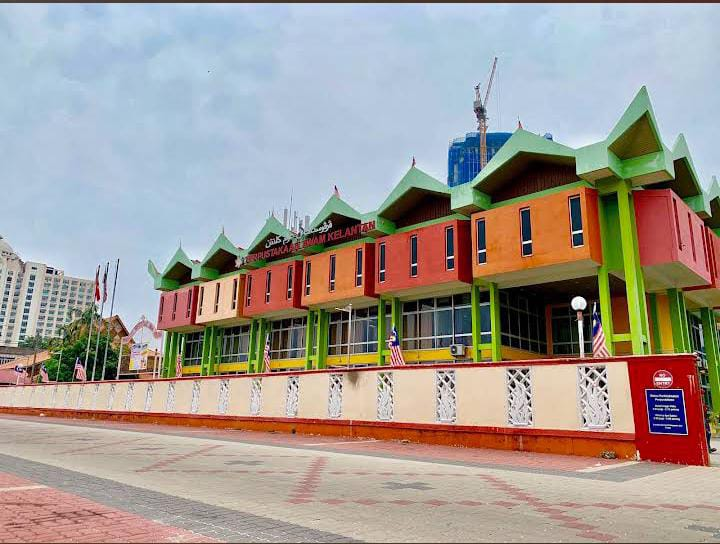

Experience
During my industrial training at Perbadanan Perpustakaan Awam Kelantan (PPAK), I gained practical experience in information management, library services, and community programs.

Industrial Training Intern
Organization: Perbadanan Perpustakaan Awam Kelantan (PPAK)
Duration: July 2025 – September 2025
Role: Intern (Information Management)
Responsibilities / Tasks:
- Arranged and organized library books according to classification systems.
- Assisted in cataloguing activities and updated library records using KOHA.
- Handled circulation tasks including book borrowing, returning, and member registration.
- Guided users on how to use KOHA system effectively.
- Supported administrative tasks such as preparing files and managing documentation.
- Participated in literacy programs, library outreach activities, and guided school students.
- Assisted in community programs including rural library visits, mobile libraries, and Kelantan Book Fair (Pesta Buku).
Skills / Knowledge Gained:
- Practical experience in library management and information organization using KOHA.
- Improved communication and customer service skills.
- Developed teamwork, time management, and problem-solving skills.
- Enhanced creativity and digital skills through video creation and promotion activities.
Achievements / Highlights:
- Produced promotional videos for PPAK programs and book fairs.
- Participated in a collaborative video project that won first place in a program organized by MAIK.
- Contributed actively to successful community outreach programs and book fair events.